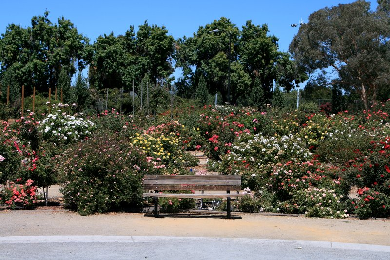
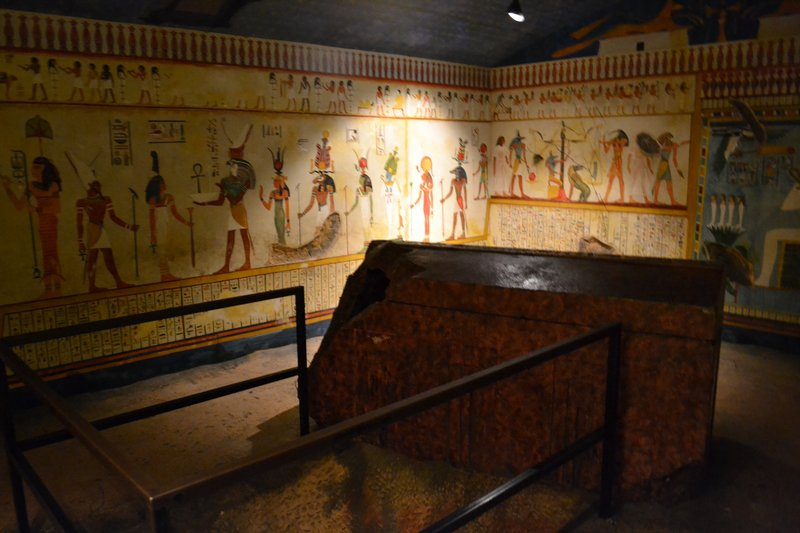
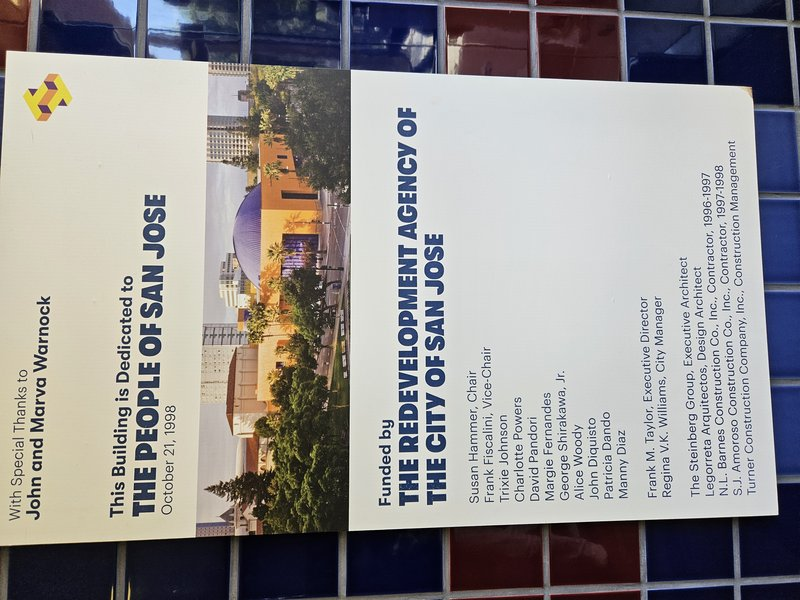

TRIP OVERVIEW
Day 1 – Winchester Mystery House · San Jose Municipal Rose Garden · Rosicrucian Egyptian Museum · The Tech Interactive
Day 1
🏨 From Hotel: 🚕 15 min → Winchester Mystery House
1. Winchester Mystery House
↳ A 160-room Victorian mansion built continuously from 1884 to 1922 by Sarah Winchester with no master plan. Stairs rise 10 feet across 44 steps, doors open onto sheer drops, and Tiffany spider-web windows light dead-end corridors. California Historical Landmark.
🏛️ Daily 10:00am - 5:00pm
⏰ ~1 hr 30 min

🚕 10 min → San Jose Municipal Rose Garden
2. San Jose Municipal Rose Garden
↳ A 5.5-acre public garden established in 1927 with over 3,500 rose shrubs across 189 varieties — named America's Best Rose Garden by All-America Rose Selections in 2010. An official AARS test site receiving award-winning cultivars before public release.

🚶 8 min · 🚕 4 min → Rosicrucian Egyptian Museum
3. Rosicrucian Egyptian Museum
↳ The largest collection of ancient Egyptian antiquities in the western US — over 2,000 objects including mummies and funerary papyri. The campus is the only museum worldwide built in Ancient Egyptian architectural style. A full-scale replica rock-cut tomb is open to walk through.
🏛️ Friday 10:00am - 5:00pm · Saturday - Sunday 11:00am - 6:00pm
🚫 Closed Monday - Thursday
⏰ ~1 hr 30 min

🚕 15 min → The Tech Interactive
4. The Tech Interactive
↳ Silicon Valley's public science center in a 1998 Ricardo Legorreta building downtown — hands-on floors covering robotics, biotech, clean energy, and computing, plus an IMAX Dome theater with one of the largest domed screens in the western US.
🏛️ Wednesday - Saturday 10:00am - 5:00pm · Sunday 11:00am - 5:00pm
🚫 Closed Monday - Tuesday
⏰ ~2 hrs

🚶 2 min · 🚕 2 min → hotel
🗓️ Weekly Closures
Museums · Closed Monday - Thursday
Science Centers · Closed Monday - Tuesday
📅 Tours
Viator
↳ A self-paced GPS-triggered audio tour through Silicon Valley landmarks — Apple Park, Stanford, the Computer History Museum, and the campuses that defined the tech industry.
🕐 9:00am · ⏳ 2 hrs 30 min · 👥 solo
🚕 20 min
↳ Group vehicle tour with a local guide covering the headquarters of major tech companies and the Valley's transformation from fruit orchards to the global center of technology.
🕐 10:00am · ⏳ 2 hrs · 👥 small group
🚶 2 min · 🚕 2 min
GetYourGuide
↳ Half-day small-group drive through Silicon Valley's tech landmarks — Google campus, Stanford's Main Quad, and the Computer History Museum, with a guide narrating the industry's history.
🕐 9:00am · ⏳ 4 hrs · 👥 small group
🚕 18 min
TripAdvisor
↳ Small-group tour covering Apple Park, Google headquarters, Facebook's campus in Menlo Park, and the founding garage of HP in Palo Alto.
🕐 9:00am · ⏳ 3 hrs · 👥 small group
🚶 2 min · 🚕 2 min
☕ Cappuccino
Voltaire Coffee Roasters · 4.6⭐ · 150+ reviews
🏛️ Monday - Friday 7:00am - 5:00pm · Saturday - Sunday 8:00am - 4:00pm
🚶 6 min · 🚕 3 min
Crema Coffee Roasting Company · 4.7⭐ · 300+ reviews
🏛️ Monday - Friday 7:00am - 5:00pm · Saturday - Sunday 8:00am - 5:00pm
🚶 8 min · 🚕 3 min
Roy's Station Coffee & Teas · 4.5⭐ · 200+ reviews
🏛️ Monday - Friday 6:30am - 6:00pm · Saturday - Sunday 7:00am - 5:00pm
🚶 20 min · 🚕 6 min
🫕 Restaurants Near Hotel
The Grill on the Alley · 4.5⭐ · 400+ reviews
↳ American · USDA Prime steakhouse connected to the lobby.
🏨 In the hotel · Lobby level
🏛️ Daily 11:30am - 10:00pm
AJI Bar & Robata · 4.4⭐ · 200+ reviews
↳ Japanese-Peruvian · Robata-grilled skewers and pisco cocktails.
🏨 In the hotel
🏛️ Tuesday - Sunday 5:00pm - 10:00pm
🚫 Closed Monday
Mezcal · 4.4⭐ · 500+ reviews
↳ Mexican · Regional cuisine in a brick dining room; mezcal cocktails.
🏛️ Sunday - Thursday 11:00am - 10:00pm · Friday - Saturday 11:00am - 11:00pm
🚶 4 min · 🚕 2 min
Scott's Seafood · 4.4⭐ · 600+ reviews
↳ Seafood · Established downtown restaurant; fresh fish and house-made pastas.
🏛️ Monday - Friday 11:00am - 9:00pm · Saturday - Sunday 10:00am - 9:00pm
🚶 5 min · 🚕 3 min
Eos & Nyx · 4.5⭐ · 300+ reviews
↳ Mediterranean · Mezzes and grilled dishes in a contemporary setting.
🏛️ Tuesday - Sunday 5:00pm - 10:00pm
🚫 Closed Monday
🚶 6 min · 🚕 3 min
🍽️ Downtown Restaurants
Strata · 4.5⭐ · 200+ reviews
↳ California contemporary · Seasonal tasting menu built around local produce.
🏛️ Wednesday - Sunday 5:00pm - 10:00pm
🚫 Closed Monday - Tuesday
Paper Plane · 4.6⭐ · 400+ reviews
↳ American · Craft cocktail bar and kitchen known for inventive drinks.
🏛️ Tuesday - Sunday 4:00pm - 12:00am
🚫 Closed Monday
Stratta Kitchen & Bar · 4.3⭐ · 350+ reviews
↳ Italian · Handmade pastas and wood-fired dishes in a warm dining room.
🏛️ Monday - Friday 11:30am - 9:30pm · Saturday - Sunday 5:00pm - 9:30pm
🍮 Local Tastes
Pho
↳ The largest Vietnamese diaspora community outside Vietnam settled here; pho along Story Road is regionally diverse and among the most authentic in the US.
Com Tam
↳ A Vietnamese working-class staple — broken rice with grilled pork chop, fried egg, and pickled daikon. The Grand Century Mall food court version is considered definitive outside Vietnam.
Street Tacos
↳ A large Mexican-American community runs some of the best taquerias in California; Alum Rock Ave is the center of the al pastor, carnitas, and birria tradition.
🎭 Shows, Performances & Concerts
California Theatre
↳ A restored 1927 Spanish Colonial Revival theater presenting the Opera San José season and other performing arts programming.
🚶 8 min · 🚕 3 min
SAP Center at San Jose
↳ A 17,000-seat arena hosting major concerts and San Jose Sharks games throughout the year.
🚶 10 min · 🚕 3 min
🚆 Train Stations Near Hotel
🚊 San Jose Diridon Station
Caltrain to San Francisco · Amtrak Capitol Corridor · ACE · VTA Light Rail.
🚶 18 min · 🚕 5 min
⛲️ Day Trips by Train
San Francisco · Amtrak · 1 hr 15 min
↳ Amtrak Capitol Corridor runs to Emeryville with a free thruway connection to San Francisco. The Ferry Building, Coit Tower, and Golden Gate Bridge are accessible by transit.
Santa Cruz · Amtrak · 1 hr 30 min
🏓 Pickleball
Arena Green East · Outdoor
↳ Four lighted public courts near downtown; free with no reservation.
🏛️ Daily 7:00am - 10:00pm
🚶 12 min · 🚕 4 min
The HUB Silicon Valley · Indoor
↳ Dedicated indoor facility with 20 courts; drop-in and reservation play.
🏛️ Monday - Friday 6:00am - 10:00pm · Saturday - Sunday 7:00am - 9:00pm
🚕 15 min
⭐ Michelin Restaurants
⭐⭐ Baumé
↳ French-Japanese contemporary tasting menu by Bruno Chemel.
🚕 25 min
⭐ Adega
↳ Portuguese tasting menu with traditional technique and California ingredients.
🚕 12 min
Not shown: 0 ⭐⭐⭐ · 0 ⭐⭐ · 1 ⭐ more in San Jose
Also on this site